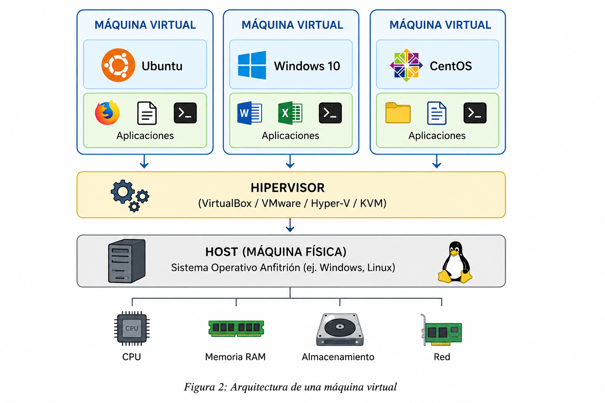
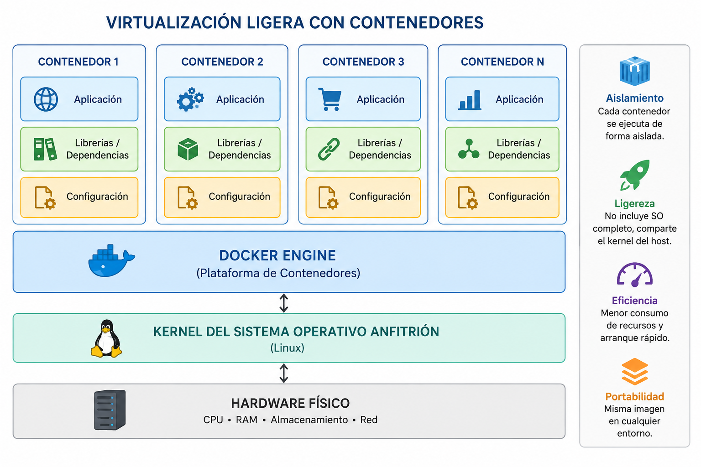
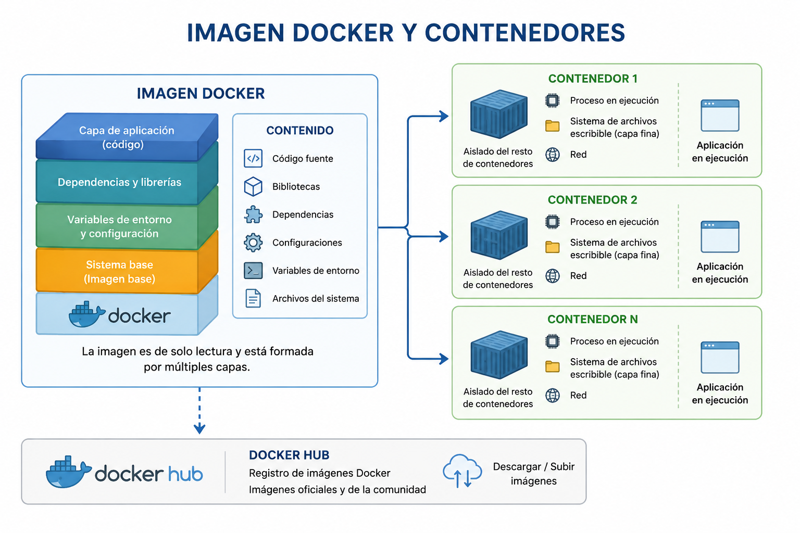

Capítulo 3 Despliegue de la infraestructura
Trabajo Fin de Grado - Arturo Cabello Rodríguez
Trabajo Fin de Grado - Arturo Cabello Rodríguez
La virtualización consiste en añadir una capa de abstracción sobre una máquina física que permite ejecutar múltiples sistemas operativos independientes sobre un mismo hardware. Cada uno de estos sistemas recibe el nombre de máquina virtual (Virtual Machine).
Durante los últimos años, esta tecnología ha experimentado un importante crecimiento debido a la necesidad de desplegar aplicaciones de forma rápida, optimizar el uso del hardware y reducir los costes de infraestructura. La virtualización permite separar el hardware del software, posibilitando que diferentes sistemas operativos, aplicaciones o plataformas de computación se ejecuten simultáneamente sobre un único equipo físico.

Figura 2. Arquitectura de una máquina virtual.
Es la máquina física donde se ejecuta el software de virtualización. Está formada por el procesador, memoria RAM, almacenamiento y resto de recursos hardware.
Software encargado de crear y administrar las máquinas virtuales, distribuyendo los recursos físicos entre ellas.
Ejemplos:Sistema operativo invitado que funciona de manera completamente aislada del sistema anfitrión, ejecutando sus propias aplicaciones y servicios.
Uno de los principales casos de uso de las máquinas virtuales consiste en la creación de laboratorios virtuales. Los estudiantes pueden instalar diferentes sistemas operativos, experimentar con nuevas configuraciones y realizar pruebas sin afectar al equipo físico donde trabajan.
Esta característica convierte a la virtualización en una herramienta muy utilizada en universidades y centros de investigación para la realización de prácticas de administración de sistemas y plataformas Big Data.
| Software | Tipo | Fabricante |
|---|---|---|
| Oracle VirtualBox | Hipervisor Tipo 2 | Oracle |
| VMware Workstation | Hipervisor Tipo 2 | VMware |
| Microsoft Hyper-V | Hipervisor Tipo 1 | Microsoft |
| KVM | Hipervisor Tipo 1 | Linux |
La virtualización ligera es una tecnología que permite ejecutar múltiples entornos aislados sobre un mismo sistema operativo, compartiendo el mismo núcleo (kernel) del sistema anfitrión. A diferencia de las máquinas virtuales tradicionales, los contenedores no requieren un sistema operativo completo para cada instancia, lo que reduce considerablemente el consumo de recursos y mejora el rendimiento.
Esta tecnología permite aprovechar mejor el hardware disponible, incrementando la eficiencia en el uso de la CPU, la memoria y el almacenamiento, facilitando además el despliegue rápido y reproducible de aplicaciones.

Figura 3. Virtualización ligera mediante contenedores.
Los contenedores constituyen una forma de virtualización ligera que permite ejecutar aplicaciones de forma aislada compartiendo el mismo kernel del sistema operativo anfitrión. Cada contenedor incluye:
| Máquinas virtuales | Contenedores |
|---|---|
| Cada máquina dispone de su propio sistema operativo. | Comparten el kernel del sistema anfitrión. |
| Mayor consumo de CPU y memoria. | Consumo muy reducido de recursos. |
| Tiempo de arranque elevado. | Inicio prácticamente instantáneo. |
| Menor número de instancias por servidor. | Mayor densidad de aplicaciones. |
| Mayor tamaño en disco. | Imágenes ligeras y portables. |
En este Proyecto Fin de Grado los contenedores constituyen la unidad básica de despliegue del ecosistema Big Data. Para ello se emplea Docker, una plataforma que facilita la creación, distribución y ejecución de contenedores de forma sencilla y reproducible.
Docker permite empaquetar una aplicación junto con todas sus bibliotecas, dependencias y archivos de configuración, garantizando que pueda ejecutarse de forma idéntica en cualquier equipo.
Docker es una plataforma de código abierto que permite crear, distribuir y ejecutar aplicaciones dentro de contenedores de forma rápida, portable y eficiente. Desde su aparición, Docker ha revolucionado el despliegue de aplicaciones al facilitar la creación de entornos reproducibles y ligeros, reduciendo considerablemente el tiempo de instalación y configuración.

Figura 7. Relación entre una imagen Docker y los contenedores generados.
Una imagen Docker es un paquete ejecutable de solo lectura formado por varias capas que contiene todo lo necesario para ejecutar una aplicación.
La virtualización ha supuesto una revolución en la administración de infraestructuras informáticas al permitir ejecutar múltiples sistemas operativos sobre un único equipo físico. Sin embargo, el consumo de recursos asociado a las máquinas virtuales ha impulsado la aparición de tecnologías de virtualización ligera como Docker, empleadas en este Proyecto Fin de Grado para desplegar el ecosistema Hadoop de forma más eficiente, portable y reproducible.